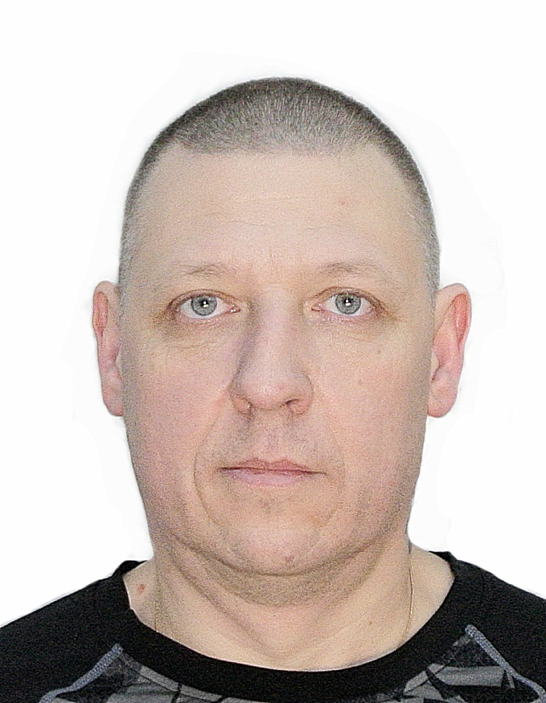

Resume

Personal Information
Full Name: Zhuravlev Sergey Vladimirovich
Date of Birth: 12.02.1975
Place of Residence: Ryazan, Russia
Contacts
- Phone: +79106156649
- E-mail: zsdp2010@yandex.ru
- Discord Nickname: Sergey (@mister-serg)
Education
Ryazan State Agrotechnological University
- Location: Ryazan, Russia
- Period: 2008 - 2012
- Specialization: Economist-manager
Ryazan Music College
- Location: Ryazan, Russia
- Period: 1997 - 2001
- Specialization: Flutist, orchestra member
Ryazan State Agricultural Academy
- Location: Ryazan, Russia
- Period: 1992 - 1997
- Specialization: Mechanical Engineer
About Me
Objective: Thoroughly study the JavaScript programming language and find a job in accordance with the acquired knowledge.
Strengths:
- Strong desire to learn and acquire new skills
- Self-taught piano and piano tuning
- Currently working in music schools servicing over 50 instruments
- Long-standing ambition to enter the IT field
IT Education:
- Currently studying at TOP Ryazan Computer Academy
- Program: “Development and promotion of web projects”
- Seeking additional knowledge and skills
Technical Skills:
- Web Technologies: HTML, CSS
- Programming Languages: JavaScript, PHP
- Frameworks: Bootstrap, Laravel
- Development Tools: VS Code, PHP Storm
Sample Code
// Variant 1
function multiply(a, b) {
return a * b;
}
// Variant 2
function multiply(a, b) {
let res = a * b;
return res;
}
Work experience:
None
English language proficiency:
Average